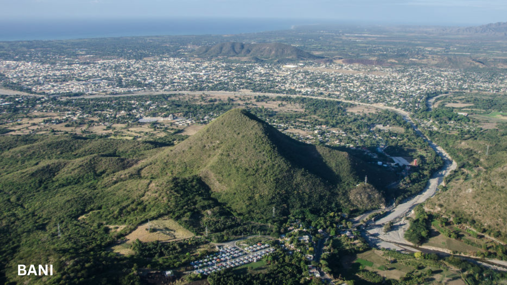
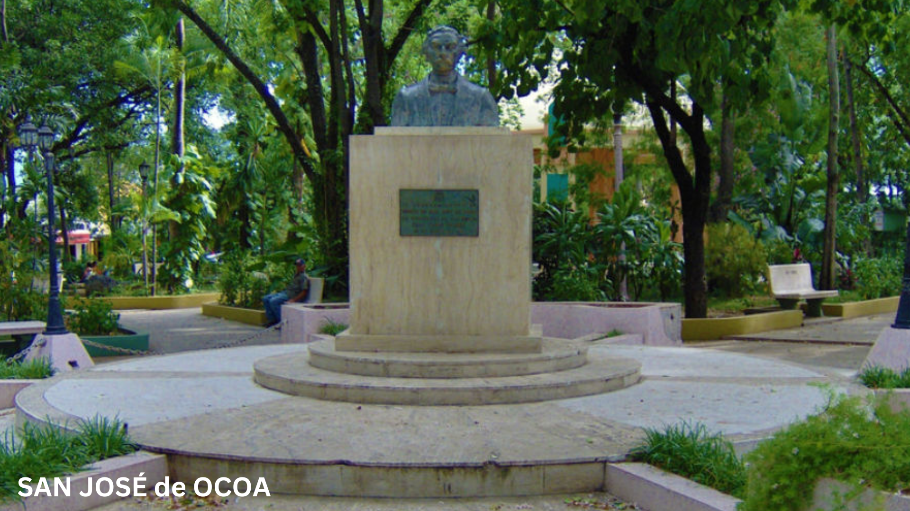
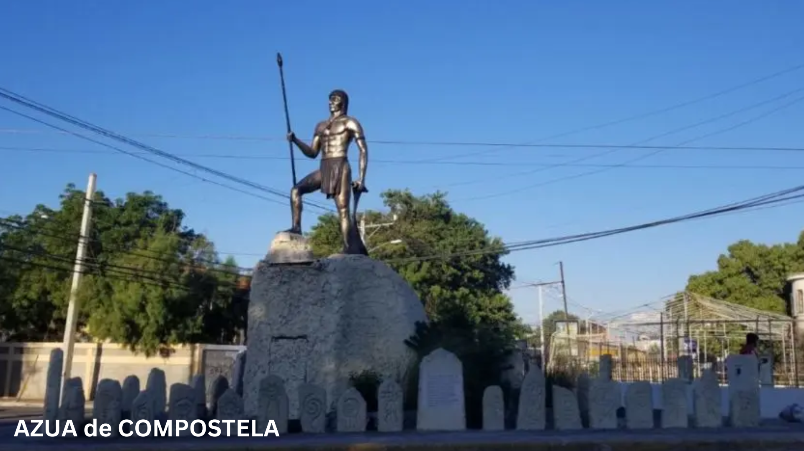

Bani es la ciudad cabecera de la provincia de Peravia en la República Dominicana. Se encuentra en la región del Cibao Sur, en el suroeste del país.es reconicida por su rica historia y su importancia cultural. Fue fundada en el año 1764 y ha sido escenario de diversos eventos históricos.
|

San José de Ocoa es conocida por su belleza natural y sus paisajes montañosos. La provincia alberga la Cordillera Central y parte del Parque Nacional José del Carmen Ramírez, ofreciendo oportunidades de actividades al aire libre como senderismo, ecoturismo y observación de aves.
|

Azua de Compostela es conocida por su rica historia y su importancia cultural. Fue fundada en el año 1504 y cuenta con numerosos monumentos y lugares históricos, como la Iglesia Nuestra Señora de los Remedios y el Museo Cultural de Azua. Además, celebran festividades populares
|